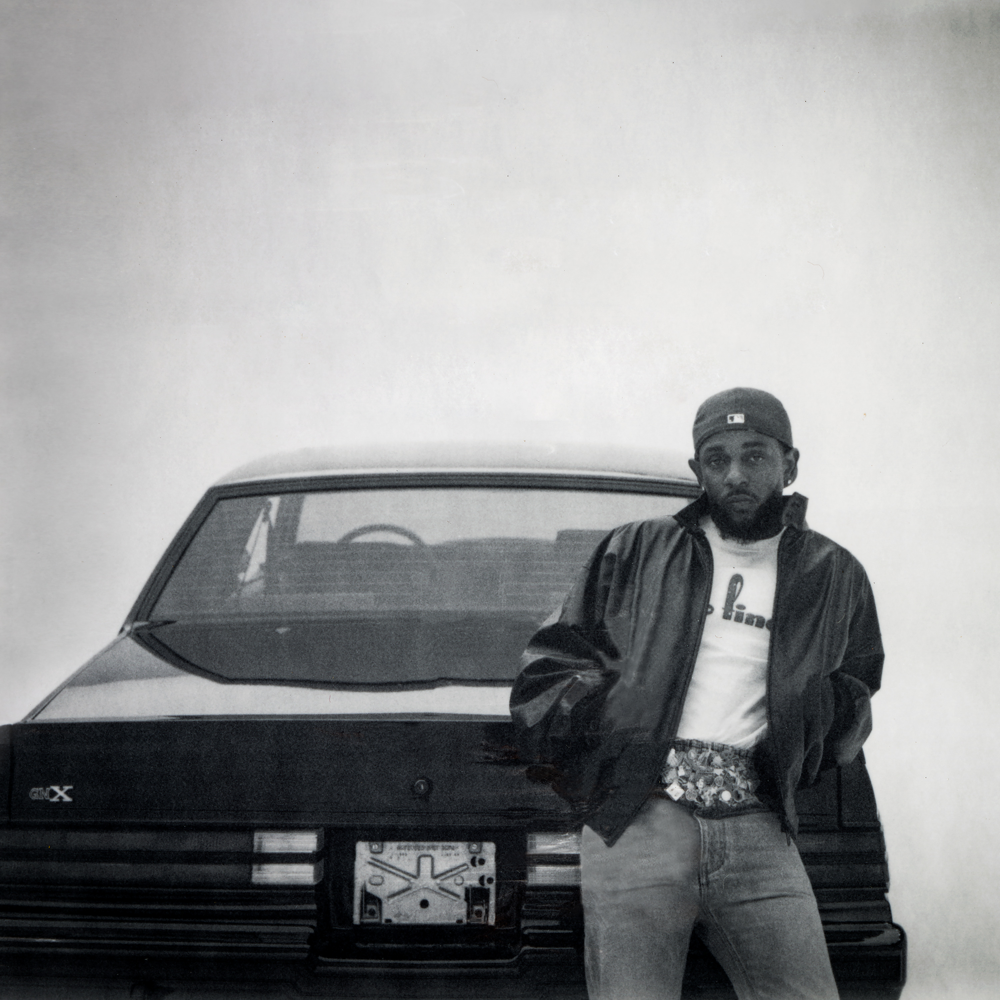
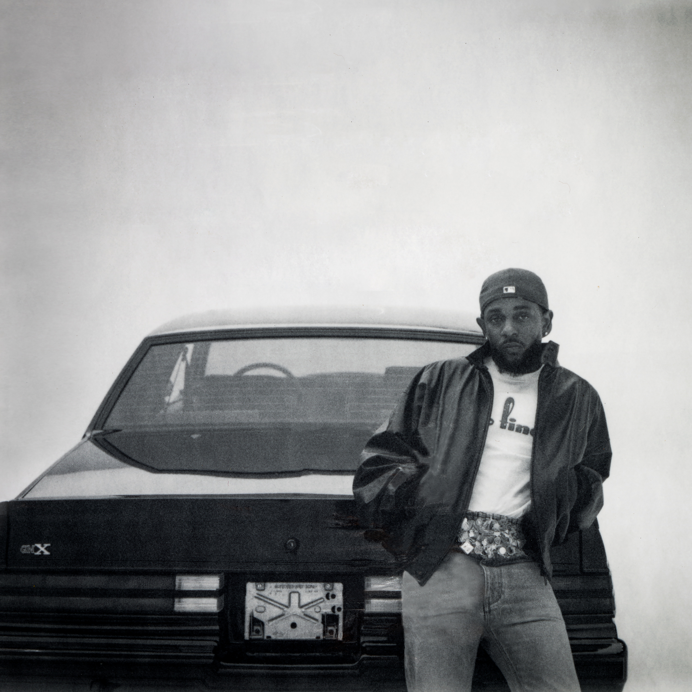

BIOGRAFIA.
Kendrick Lamar Duckworth, nascido em 17 de junho de 1987, em Compton, Califórnia, é um dos rappers mais influentes da sua geração. Conhecido por suas letras profundas, suas batidas inovadoras e sua capacidade de contar histórias, Kendrick trouxe uma nova abordagem ao hip-hop, misturando elementos de jazz, funk e poesia em suas músicas.
Desde o início da sua carreira, ainda sob o nome de K-Dot, ele chamou a atenção com suas mixtapes independentes. Seu álbum de estreia, Section.80 (2011), foi um marco no rap alternativo, mas foi com good kid, m.A.A.d city (2012) que ele explodiu mundialmente, com hits como Swimming Pools (Drank) e Bitch, Don't Kill My Vibe.
Ao longo dos anos, Kendrick lançou álbuns aclamados pela crítica, como To Pimp A Butterfly (2015), que misturou jazz e rap para abordar questões raciais nos EUA, e DAMN. (2017), que lhe rendeu o Prêmio Pulitzer de Música, tornando-o o primeiro artista de hip-hop a receber essa honraria. Seu impacto na música e na cultura pop se estendeu além dos discos, incluindo sua curadoria na trilha sonora de Black Panther (2018) e colaborações com artistas como J. Cole, SZA e Taylor Swift.
Com letras que exploram temas como racismo, espiritualidade e autoconhecimento, Kendrick Lamar continua a moldar o futuro do hip-hop, mantendo-se fiel às suas raízes e elevando o gênero a novos patamares.
O terceiro álbum de estúdio To Pimp A Butterfly é considerado por muitos um dos melhores discos da historia, nas faixas estão diversas criticas a sociedade e o desejo do Kendrick de mudar o mundo.


 
